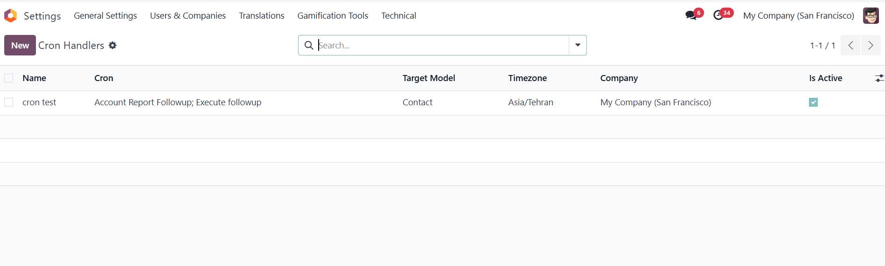
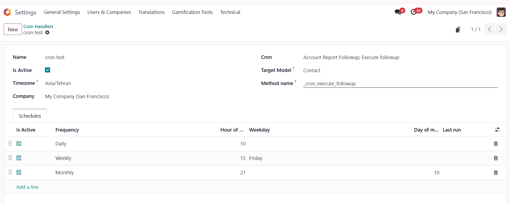

Cron Handler lets you run methods on any concrete Odoo model on daily, weekly, or monthly timetables — using local time and a per-handler timezone. No need to maintain dozens of separate scheduled actions.


ir.cron to pre-fill model/method
After installation, go to
Settings → Technical → Cron Handlers,
create a handler, add schedule lines, and implement your target method
(e.g. cron_handler_run) on the chosen model.
TechStars Solution — info@techstarsolution.com — LGPL-3